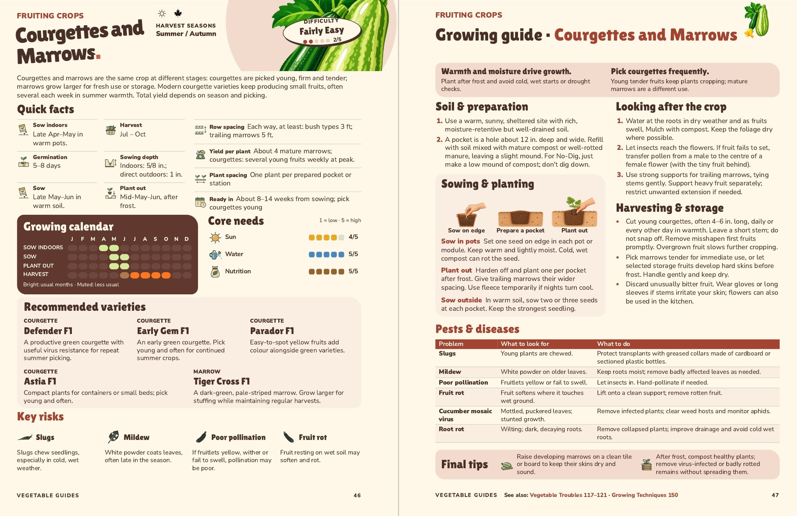

Courgettes and Marrows
Pages 46–47, checked 5 November. One plant now starts with a capital O. A planting pocket is explained in Soil & preparation, with a cutaway beside the original sowing drawing. The final picture now shows the transplant entering that enriched pocket; all three drawings align at their visible bases. Soil & preparation now ends with your No-Dig alternative: make a low mound of compost without digging down.
The two Final tips now show a marrow resting on a board and healthy plant remains going into a compost bin. Slug control uses your exact wording about greased collars.
All ten Quick facts and five varieties are retained. Bitterness is removed from Pests & diseases as requested, leaving six entries; the harvesting advice to discard bitter fruit remains. The metric sowing-depth measurements stay with their units. Both editions keep normal text sizes and the complete See also footer.

Approved by John on 5 November. Both editions have been checked as actual PDFs. Canonical data, the full review and main book remain unchanged. Changes, sources and checks.